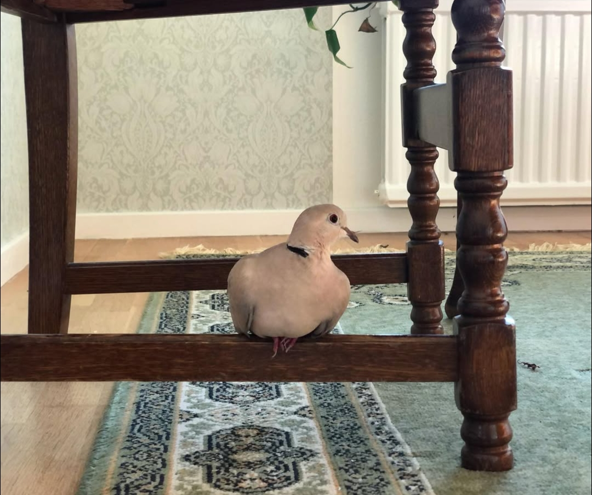

I recently traveled to the U.S. and visited Medford, Jacksonville and Ashland, all located in Oregon (I mention this because the U.S. has many cities with the same name across different states). As a somewhat introverted person, the cultural and social differences felt a bit overwhelming at times, but they were still fascinating to experience. I made some new friends and explored a variety of bars, cafés, shops, buildings and nature. Overall, the trip was a refreshing break for my mental well-being. Now, I'm back to reality and the fast-paced lifestyle is slowly creeping in again.
What are you doing?
This is a now page. If you have your own site, you should make one, too!
My life is often busy, and I've been somewhat secretive when sharing details with family and friends. I thought this would be a great way to keep everyone updated on what I'm currently doing. I'll do my best to keep this page updated with any new happenings. Thank you, Phillip Ridlen, for inspiring me with your now page!
This was what I was doing as of February 28 2025
This was what I was doing as of January 27 2025
This is what I am doing now
Life 🌟

Education 🎓
Unfortunately, I couldn't find a replacement opponent in time, so I had to postpone my final presentation until the end of March. However, this turned out to be a positive in some ways — I'll now receive less stressed feedback and have extra time to refine my presentation. On a brighter note, I passed my applied internet technology exam, which happens to be the last exam I'll ever take. That alone is worth celebrating! Once I have my diploma, I'll be throwing a big party and inviting all my friends.
Work 💼
At Opera, I've been getting more comfortable with Kotlin, Android and Jetpack Compose. These past two months have been a huge learning experience, and I'm really excited about the project. It's a highly useful app with a real purpose. Despite being less than two years old, the project has already attracted millions of users. Recently, we won the Africa Tech Summit in the Web3 category — a clear sign that we're on the right track!
Organizations 🏢
My ethical hacking organization is still going strong! Yesterday we hosted our first major event, with nearly 50 attendees. It was a workshop where we introduced key ethical hacking concepts and provided simple exercises for participants to tackle after the presentation. SICK and SECTRA sponsored the food (poké bowls from Melins Café). The event served as a warm-up for our upcoming CTF competition next weekend. This CTF has been in the works for a long time, and we've built nearly 40 unique hacking challenges from scratch for it!
As Editor-in-Chief of LiTHanian, I'm actively working on our third magazine issue. For this sprint, we're taking a slightly different approach — not just in terms of content — but also in our methodology. During our recent evaluation, we identified some areas for improvement, so we're currently focused on refining the workflow to make things more efficient.
Hobby Projects ⚙️
For me, having hobbies outside of studying and working is very important. My main hobbies are programming, photography, music, and writing.
When it comes to programming, hobby projects have taken a backseat lately. I've mostly been focused on creating challenges for the upcoming CTF event in my spare time and I've managed to implement around 15 challenges this month. I also participated in SNHT's qualifier CTF, but I was at the airport and sleep-deprived during the event, so it didn't go as well as I'd hoped. I ended up placing 56th out of 102 participants.


In terms of photography, I've actually had the chance to take some professional shots with my Nikon camera. I decided to take advantage of my travels in the U.S. to document the experience and capture some of the sights. I'll be attaching some of the better photos.
I haven't been writing much lately, aside from article work. However, I recently read the Swedish book Bränn alla mina brev by Alex Schulman, and it inspired me to start writing a novel. So, I'm currently working on adapting my movie script into a Swedish book.
Expert Progress 📈
The concept of reaching 10,000 hours to become a professional or an expert in a field is derived from Malcolm Gladwell's book "Outliers: The Story of Success" Gladwell popularized the idea that achieving a high level of proficiency in any field typically requires about 10,000 hours of dedicated practice. This notion is based on the research of psychologist Anders Ericsson, who studied the practice habits of elite performers in various domains.
I've been tracking my programming time since 2019, so these numbers are based on that data. The actual total is likely higher, considering I wrote my first program in 2012! Please note that I include this jokingly; I don't necessarily believe in the idea of becoming an expert after 10,000 hours. I haven't given it much thought, and I certainly don't feel like an expert yet.